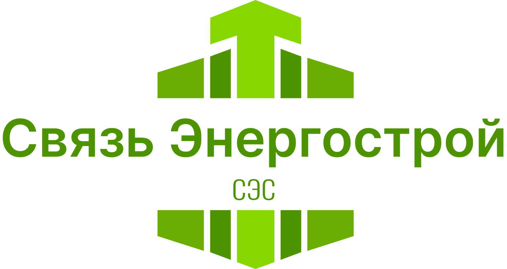
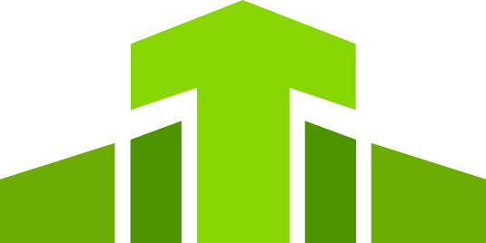
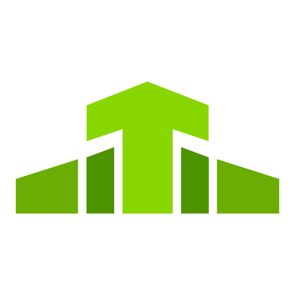

Дизайн-система демо «Связь Энергострой»
Страница собрана из тех же файлов, что и прототип главной: design/system/tokens.css, design/system/system.css, design/system/system.js. Цвета, размеры текста и контраст читаются из токенов при загрузке, поэтому расхождения между этой страницей и системой невозможны. Текущая ширина окна: —. Спецификация правил — DESIGN-SYSTEM.md в корне репозитория.
Все решения — Proposed, пока заказчик не утвердил направление; утверждена только палитра (A-12)
Логотип
Оригинал заказчика: brand/source/logotip-vektor.pdf (векторный PDF из Figma, 1384 × 735,5; 14 контуров; растра, градиентов и шрифтов нет, текст в кривых). SVG собраны скриптом brand/build_logo_svg.py без изменения геометрии; сверка с исходником описана в DESIGN-SYSTEM.md §2.
Полный знак (оригинал) и вариант на тёмном

logo-full.svg · оригинальные цвета · для светлого фона
тот же файл на фоне страницы --color-bg
logo-full-on-dark.svg · название и «СЭС» белые, знак без изменений
Словесная часть (шапка) и знак (favicon, компактное использование)
logo-wordmark.svg · шапка после прокрутки
logo-wordmark-on-dark.svg · шапка над hero

logo-mark.svg · верхний знак. Салатовые части слабо контрастируют со светлым (1,7 : 1 и 2,6 : 1): знак сопровождается названием или стоит на тёмном
Favicon

16 pxfavicon.svg: верхний знак по центру квадрата, поле 6 %, фон прозрачный. Знак широкий (2 : 1), поэтому в 16 px он занимает 8 px по высоте — различим, но мелок.
Охранное поле и минимальные размеры
Охранное поле = высота заглавной «С» в названии = 7,7 % ширины полного знака (штриховая рамка). В неё не заходят другие элементы.
| Вариант | Минимум | Где |
|---|---|---|
| Полный знак | ширина 160 px | подвал, титулы, документы |
| Словесная часть | ширина 160 px (в шапке 168 / 200 px) | шапка |
| Знак | ширина 24 px (favicon — 16 px) | favicon, значок приложения |
Где какой вариант
| Место | Вариант | Почему |
|---|---|---|
| Header над hero (прозрачный) | logo-wordmark-on-dark.svg | Название читается на тёмном; полный знак при высоте шапки 72–84 px нечитаем (название ≈ 10 px) |
| Header после прокрутки / внутренние страницы | logo-wordmark.svg | Оригинальный цвет названия на белом (3,8 : 1; для логотипа требований контраста нет) |
| Footer | logo-full-on-dark.svg, ширина 208 px | Полный знак читается; белый текст на тёмном |
| Вкладка браузера | favicon.svg | Знак без текста |
Нельзя
- перерисовывать, растягивать непропорционально, поворачивать, добавлять тень, обводку, градиент;
- менять шрифт названия на Manrope или набирать название текстом;
- перекрашивать знак; допускается только белый цвет названия и «СЭС» на тёмном (файлы
*-on-dark.svg); - помещать на фотографию без затемнения и на фон со слабым контрастом к зелёному;
- использовать растровый логотип со старого сайта.
- Вариант на тёмном с белым названием (допущен заданием PHASE 4, но это производное от оригинала).
- В шапке используется только словесная часть без знака. Горизонтальная версия (знак слева от названия) потребовала бы перекомпоновки оригинала и не создавалась.
- Favicon = верхний знак в квадрате с прозрачным фоном; квадратный значок с фоном или другая обрезка — решение бренда.
- Цвета, измеренные по старому PNG (A-12:
#4D9600,#6BAD04,#88D600), отличаются на 1–3 единицы канала от значений в векторном файле (#4E9300,#6BAD03,#89D702). Токены UI не менялись; какие значения считать фирменными — DESIGN-SYSTEM.md §3.
Цвет
Компоненты используют только семантические токены (--color-*), а не HEX. Корпоративная палитра утверждена (A-12): основной #116315 и салатовые #88D600, #6BAD04, #4D9600. Нейтральные и тонировка — Proposed (V-3).
Цвета логотипа (значения векторного файла)
Контраст (WCAG 2.2 AA), посчитан из токенов
| Пара | Токены | Контраст | Порог | Результат |
|---|
Правило: --color-accent на светлом фоне не несёт текст и смысл (1,66 : 1); используется как заливка кнопки с тёмным текстом, подчёркивание-акцент и метки на тёмном.
Типографика
Manrope — заголовки, кнопки, навигация, подписи. Golos Text — текст и интерфейс. Локальные WOFF2 (кириллица + латиница, OFL-1.1), лицензии в design/system/fonts/. Размеры адаптивны через clamp(): значения при 390 / 768 / 1440 px посчитаны из токена.
Проверка кириллицы
Manrope 500
АБВГДЕЁЖЗИЙКЛМНОПРСТУФХЦЧШЩЪЫЬЭЮЯ абвгдеёжзийклмнопрстуфхцчшщъыьэюя 0123456789 № «» „“ — ,.;:!?/()
Golos Text 400
АБВГДЕЁЖЗИЙКЛМНОПРСТУФХЦЧШЩЪЫЬЭЮЯ абвгдеёжзийклмнопрстуфхцчшщъыьэюя 0123456789 № «» „“ — +7 (924) 499-94-44 · 0,4/10/35кВ
Сетка, отступы, геометрия
Контейнер и колонки
Контейнер ≤ 1200 px (--container), боковые поля clamp(16px, 4vw, 32px), логическая сетка 12 колонок с промежутком 16 px. Карточные сетки задаются явно: услуги 4 → 3 → 2 → 1, проекты 3 → 2 → 1, преимущества 3 → 1, подвал 4 → 2 → 1, обращение 5/7 → 1.
| Брейкпоинт | Роль | Что меняется |
|---|---|---|
≤ 640 px (канонический) | Телефон | Нижняя панель, услуги — компактные строки, 1 колонка, диалог — нижняя шторка, логотип 168 px |
≤ 960 px (канонический) | Планшет | Меню-шторка вместо навигации, шапка 72 px, проекты и галерея — 2 колонки, обращение — 1 колонка |
≤ 820 / 900 / 1024 / 1180 px (локальные) | Подстройка компоновки | 820: услуги 2 колонки, нет плавающей карточки в hero · 900: преимущества в столбец · 1024: услуги 3 колонки, подвал 2 колонки · 1180: телефон уходит из шапки |
Отступы (шаг 4 px)
Секции разделяет --section-gap = clamp(56px, 6vw, 88px); заголовок секции → содержимое --head-gap = clamp(24px, 3vw, 40px). Нечётные значения прототипа (6, 10, 14, 18, 28, 36, 44) — оптическая подгонка внутри компонентов.
Радиусы
блок обращения
карточки, слоты, диалоги
плашка проекта
кнопки, поля
иконка-кнопка, номер
чипы, бейджи
Радиус зависит от размера и роли: чем крупнее поверхность, тем больше радиус; вложенный элемент имеет меньший радиус, чем контейнер.
Размеры элементов
| Элемент | Размер | Токен |
|---|---|---|
| Кнопка: малая / обычная / крупная | 44 / 48 / 56 px высота | --size-btn-sm --size-btn --size-btn-lg |
| Поле ввода / textarea | 52 px / от 96 px | --size-field |
| Иконка-кнопка (круг со стрелкой) | 40 / 48 / 56 px; кнопка закрытия 44 px | — |
| Минимальная цель касания | 44 × 44 px | --size-touch |
| Шапка / нижняя панель | 84 px (72 до 960) / 76 px | --header-h --dock-h |
| Граница кнопки и поля | 1,5 px (на экране 1× отрисуется 1 px) | --border-w |
Пропорции изображений
.slot--wide.slot--4x3Фото всегда object-fit: cover: разная ориентация исходников не ломает макет.
Ширины текстовых колонок
| Текст | Максимум |
|---|---|
| H1 hero | 11 символов (11ch) |
| Строки hero | 540 px |
| Заголовок внутренней страницы / вводный абзац | 22ch / 60ch |
| Подзаголовок блока обращения | 34ch |
Длинный текст (.prose, политика) | 68ch |
Кнопки и ссылки-действия
Состояния «hover», «focus», «active» показаны служебными классами .is-hover, .is-focus, .is-active, которые зеркалят :hover, :focus-visible, :active; в боевой разметке они не нужны. Все живые образцы можно навести и проверить Tab. Состояние «loading» в демо не требуется: формы ничего не отправляют; для production — aria-busy="true" и неактивная кнопка.
Primary — .btn--lime
Secondary — .btn--ghost-dark (на светлом) и .btn--ghost-light (на тёмном)
Text — .btn--text-light (на тёмном), .link-arrow, .link-inline
Icon button — .dot как <button>, .modal__close
Иконка без текста всегда имеет aria-label; сама иконка — aria-hidden="true". Декоративный .dot внутри кнопки или ссылки — не интерактивен сам по себе.
Элементы формы
Демо-форма ничего не отправляет и не сохраняет: у формы нет action, у полей нет name, нет сетевых запросов и хранилищ. Подпись всегда над полем, видимая. Ошибка — текст под полем, связанный через aria-describedby, и красная граница (цвет не единственный признак: есть текст).
Проверьте номер: нужно не меньше 10 цифр
Уведомления формы
Демо-пометка (перед формой) — .demo-note
Демонстрационная форма. Заявка не будет отправлена
Результат отправки — .form__result
Это демонстрация. Заявка не отправлена, введённые данные не сохранены
Согласие — .form__consent
Блок-пометка «место под материал» — .demo-note--block
Актуальные документы будут добавлены после получения от заказчика
Флажок согласия в демо не используется (решение Q-31 — после демо). Живая форма с проверкой — в блоке обращения ниже.
Карточки и блоки содержимого
Карточка услуги — .service
Название — дословно из источника, от 1 до 6 строк без обрезки (переносы и hyphens: auto). Номер 01–10 — интерфейсный. У «Проектирования» вместо описания — .service__pending «Описание будет добавлено» (описание не придумывается). Действие «Заказать» открывает демо-диалог с названием услуги; на ≤ 640 px карточка превращается в компактную строку (слово «Заказать» остаётся в доступном имени).
Четвёртая карточка показана в состоянии hover. Якорный переход /services#s-NN подсвечивает карточку рамкой через li:target: показать акцент на карточке «Благоустройство…».
Карточка проекта — .project + .slot
Слот — явная заглушка «Место для фотографии» с рамкой-видоискателем; не имитирует фото. Активная карточка (есть страница) — кнопка-стрелка с aria-label. Недоступная — .project--static: не ссылка, нет hover, текстовая пометка «Страница в полной версии». Когда фото появится — внутрь слота кладётся <img class="slot__img">, заглушка скрывается автоматически.
Таможенно-логистический терминал
Благовещенская ТЭЦ
Страница в полной версии
ГАУКАО «Амурская областная филармония»
Страница в полной версии
.slot--wide — широкий кадр (шапка страницы проекта)
.slot--4x3 — кадр галереи
Галерея, статичные строки, бейдж
- Наружное электроснабжение Страница в полной версии
- Наружное электроосвещение Страница в полной версии
- Наружные сети связи Страница в полной версии
.gallery — 3 → 2 колонки; .row-list — неактивные строки (не ссылки, без hover); .badge — пометка «в полной версии» (светлая и .badge--on-dark).
Хлебные крошки и шапка страницы
Проекты
В данном разделе указаны завершенные и текущие проекты
.page-head: крошки → H1 (--type-h1) → вводный абзац. На странице один <h1>; здесь образец показан тегом <h4>, чтобы не нарушать иерархию этой страницы.
Преимущества — .adv
ПОЧЕМУ СТОИТ ВЫБРАТЬ
ООО «Связь Энергострой»
Высококвалифицированные специалисты
Опыт работы на крупных объектах
Работаем по Локально-Сметным Расчетам
Длинный текст — .prose
2. Основные понятия, используемые в Политике
2.1. Автоматизированная обработка персональных данных — обработка персональных данных с помощью средств вычислительной техники.
Для политики конфиденциальности: ширина ≤ 68ch, заголовки уровня H3, списки с маркерами.
Блок обращения (CTA) с живой демо-формой
Попробуйте отправить пустую форму, ввести неверный телефон или e-mail, затем заполнить верно: проверка клиентская, данные нигде не сохраняются, сетевых запросов нет.
Мы рады сотрудничать с Вами!
Заполните данные и мы свяжемся с Вами в ближайшее время
Демонстрационная форма. Заявка не будет отправлена
- Телефон
- +7 (924) 499-94-44
- Телефон
- +7 (924) 448-08-59
- doc@ses-dv.ru
- +7 924 499 94 44
Header, footer, диалоги, нижняя панель
Header
Над hero шапка прозрачная, текст и логотип белые (logo-wordmark-on-dark.svg). После прокрутки на 24 px — класс .is-solid: белый фон 97 %, тёмный текст, зелёный логотип, тонкая нижняя линия. На внутренних страницах без hero — data-header="solid": шапка светлая всегда. Состав: логотип · 4 пункта навигации (текущий — aria-current="page", подчёркнут) · телефон (с 1180 px) · «Заказать звонок» (с 960 px). До 960 px — кнопка «Меню» открывает шторку. Ширина образцов зависит от окна: при ширине < 960 px показан мобильный вид.
Прозрачная шапка над тёмным hero (пункт «Услуги» — hover, «Проекты» — текущий).
Светлая шапка (.is-solid).
Footer
Четыре колонки: полный знак + юридическое название + описание · «Разделы» (4 активных + «Вакансии» с бейджем «В полной версии») · «Контакты» (телефоны, e-mail, «Адрес уточняется» — ADDRESS_PENDING) · «Демонстрационная версия». Внизу — юридическое название и «Политика конфиденциальности». ≤ 1024 px: 2 колонки; ≤ 640 px: 1 колонка. «© 2024» из источника не переносится (V-13).
Диалоги и шторка меню
Нативный <dialog> + showModal(): фокус удерживается внутри, Esc и клик по фону закрывают, фокус возвращается на кнопку-источник. На ≤ 640 px диалог выезжает снизу (шторка), меню — на весь экран. При закрытии введённое сбрасывается.
Нижняя панель mobile — .dock
Только ≤ 640 px: две кнопки («Позвонить» — tel:, «Оставить заявку» — диалог), закреплена снизу, учитывает safe-area-inset-bottom; body получает нижний отступ --dock-h, поэтому панель не перекрывает конец страницы. Показана в кадре «Главная, 390 px» ниже.
Hero: структура и требования к фотографии
Фотография не добавлена: заказчик предоставит или сгенерирует её позже. Сейчас hero — тёмная заглушка с рамкой-видоискателем и карточкой «Место для фотографии». Схемы ниже — не изображения, а условные обозначения.
A (по умолчанию): градиент слева направо rgba(10,16,11,.72) → .38 на 48 % → 0 на 75 %. Светлая подложка схемы — худший случай (яркая фотография).
B (светлая фотография): .72 → .56 на 48 % → .2. При α ≥ 0,56 под текстом любой пиксель даёт белому тексту ≥ 4,5 : 1.
C (mobile ≤ 820 px): кадр обрезается до ≈ 4 : 5 по центру объекта (object-position), текст внизу, градиент снизу вверх .82 → .55 на 45 % → .15.
| Параметр | Требование |
|---|---|
| Размещение | На всю ширину окна под прозрачной шапкой; высота clamp(640px, 49vw, 740px) (≈ 2 : 1 на 1440 px) |
| Пропорция и размер | 21 : 9; рекомендуется 2880 × 1235 px, минимум 1920 × 823 px |
| Формат и вес | WebP (+ JPG запасной), sRGB, ≤ 300 КБ; без текста, логотипов и водяных знаков внутри кадра |
| Композиция | Объект — правая половина (от 52 % слева); левая половина — спокойная, малодетальная зона под текст; важное — в центральных 80 % по высоте (кадрируется cover) |
| Яркость под текстом | Вариант A допустим, если в левых 50 % кадра нет пикселей ярче ≈ 72 % (≈ #B9B9B9): при α .38 это граница 4,5 : 1 для белого текста 18 px. Иначе — вариант B |
| Подлинность | Только реальные объекты СЭС или явно помеченные иллюстрации заказчика; сток не выдаётся за проекты (CLAUDE.md) |
| Доступность | Фото — декоративное (alt=""), если не несёт информации; текст hero всегда живой |
Адаптивные решения: реальный прототип в кадрах
Кадры — настоящая главная (design/explorations/ses-home-v1/index.html) в окнах 320, 390 и 768 px. Ряд прокручивается внутри блока; горизонтальной прокрутки у страницы нет. Широкий вид (1024–1440 px) проверяется изменением окна браузера.